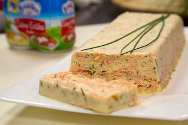

Terrine aux deux saumons
Recette pour 5 personnes
Ingrédients
- 16,5 cl de crème entière fluide
- 2,5 oeufs
- 125 g de saumon fumé
- 416,5 g de saumon frais
- 2,5 cuillère à soupe de ciboulette (Vous pouvez remplacer la ciboulette par du basilic ou de la coriandre.)
- 3,5 cuillères à café de curry
- sel
- poivre
Temps de préparation
Temps total : 1h 05min
Préparation : 15 min
Cuisson : 50 min
Étapes
- Préchauffez votre four à 180°.
- Ciselez finement la ciboulette. Réservez.
- Ôtez la peau du saumon frais si nécessaire, et coupez-le en morceaux grossiers.
- Placez le saumon frais, les oeufs entiers, la crème et les herbes dans le bol du mixeur. Salez et poivrez à votre convenance, mais n'oubliez pas que le saumon fumé est déjà salé.
- Mixez jusqu'à ce que le mélange soit bien épais, mais tout en laissant des morceaux de saumon. cette opération dure à peine 10 sec selon la puissance de votre robot.
- Si vous n'avez pas de mixeur, fouettez la crème, les oeufs les herbes, le sel et le poivre dans un saladier. Coupez plus finement le saumon frais et ajoutez-le à l'appareil.
- Versez 1/3 du mélange dans un moule à cake, tapissez d'une couche de saumon fumé coupé grossièrement en morceaux, ajoutez un second tiers du mélange, tapissez d'une deuxième couche de saumon fumé et terminez par le dernier tiers du mélange.
- Déposez le moule dans un plat rempli d'eau chaude.
- Couvrez avec une feuille d'aluminium et enfournez 45 minutes, puis 5 minutes sans la feuille d'aluminium.
- Laissez refroidir à température ambiante puis mettez au réfrigérateur au minimum 2h. Démoulez au moment de servir.
- Servez avec une bonne mayonnaise et régalez-vous !